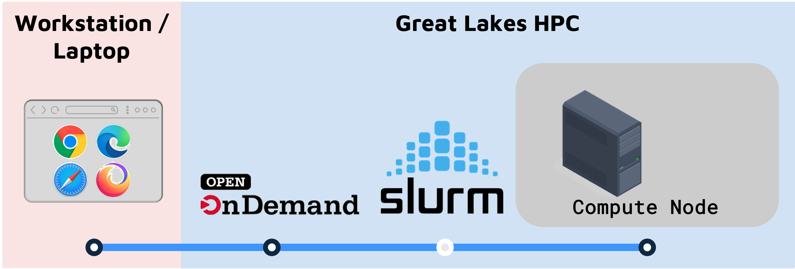
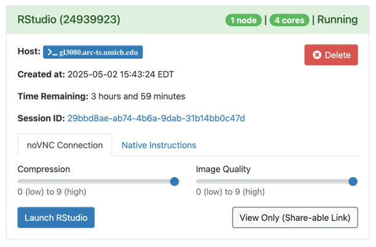
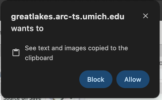
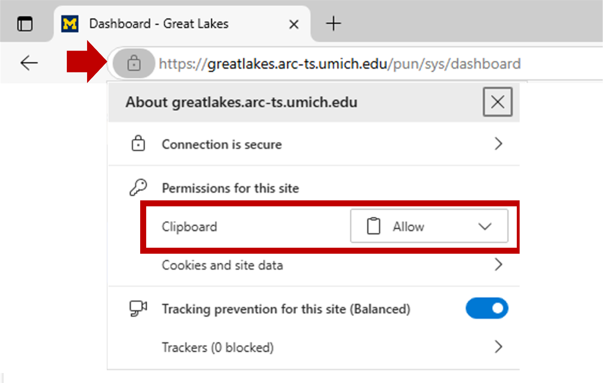
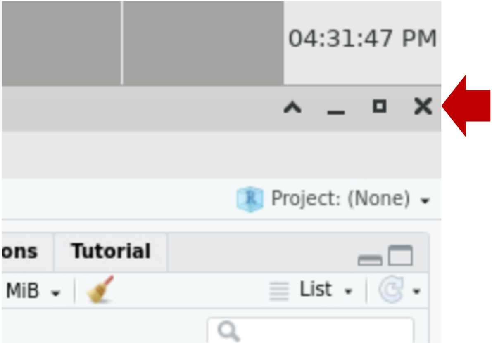
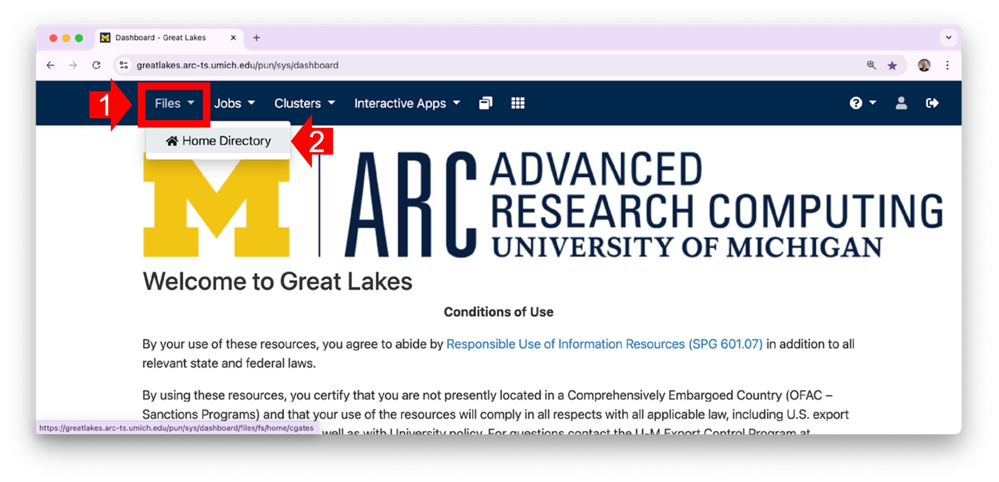
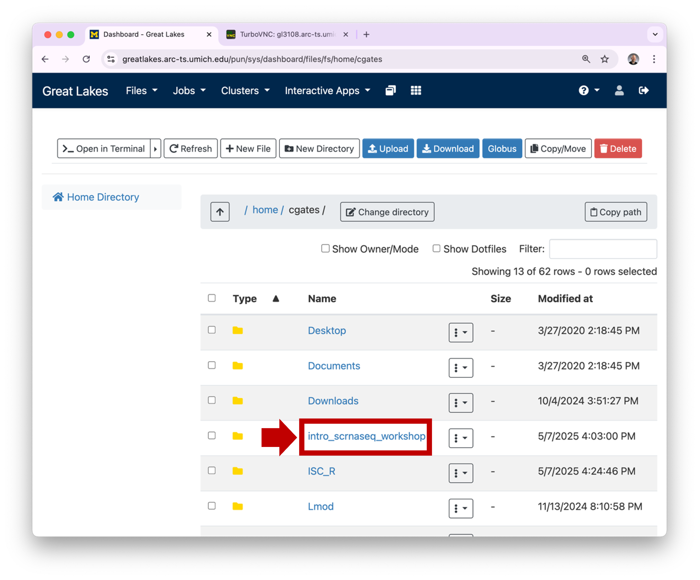
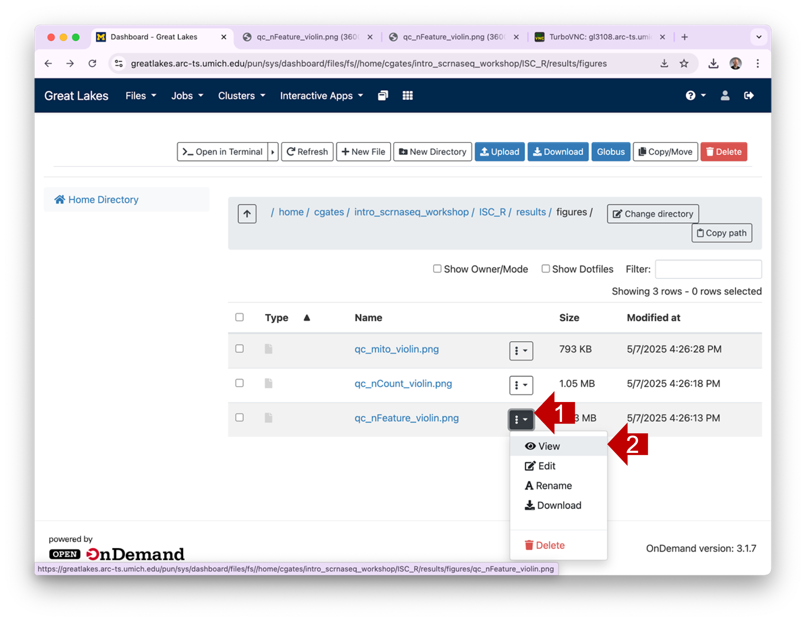
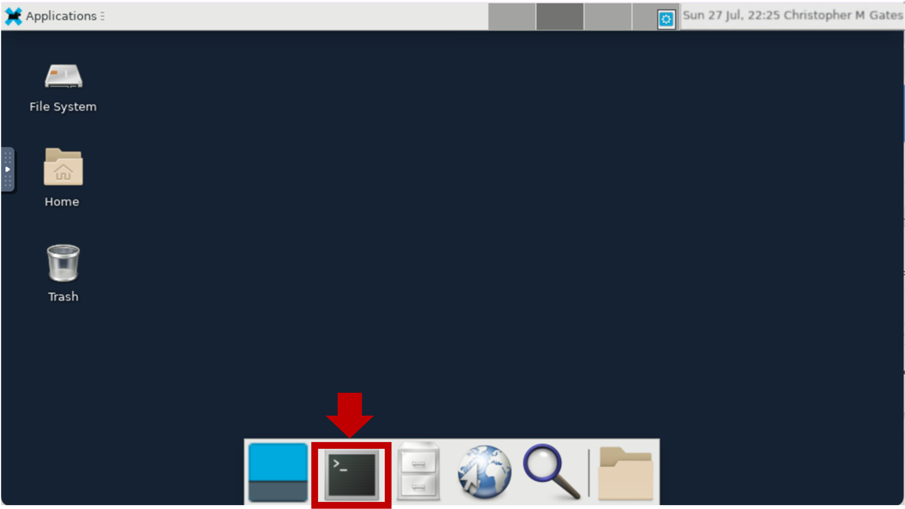
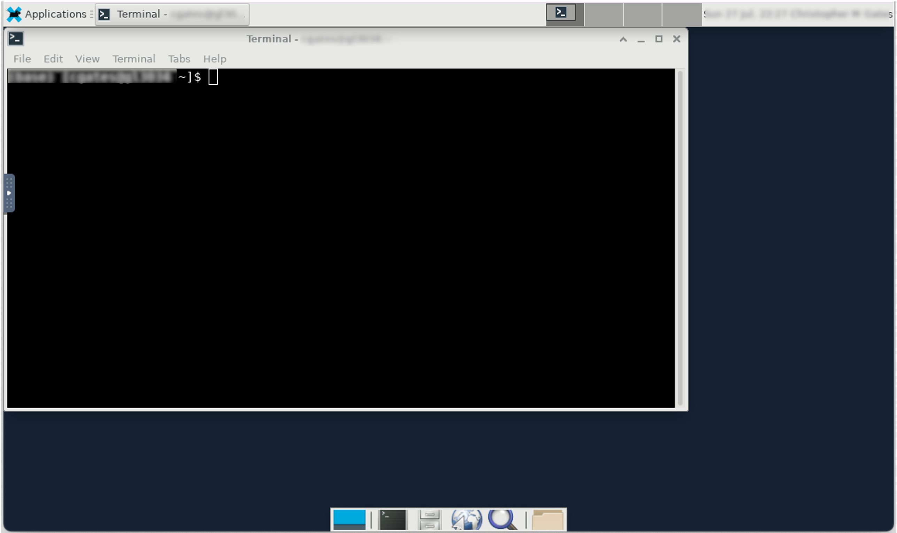

Running Seurat on UMich Great Lakes HPC
UM Bioinformatics Core Workshop Team
2025-09-22

Objectives
You can run Seurat and several related R libraries using University of Michigan’s Great Lakes High Performance Cluster (HPC). By the end of this guide you will be able to:
- Use Great Lakes and Open OnDemand to start a RStudio session with pre-installed Seurat libraries.
- Copy/paste content from your workstation to RStudio and back.
- Open a new browser window within an Open OnDemand session.
- Transfer files between Great Lakes and your workstation
Background
You can run Seurat locally on your workstation. However, running Seurat on Great Lakes is a nice approach because:
- Sometimes scRNA-Seq analysis requires a LOT of memory (RAM). It’s easy to ask for more memory on Great Lakes and Great Lakes nodes have more memory available than a typical laptop/workstation.
- From Cell Ranger to RStudio to Seurat, much of the software is pre-installed. Installing bioinformatics software is typically nuanced and often unpleasantly complex - so having it ready is a big win. (Thanks to the ARC team for getting all this installed!)
That said, using Great Lakes is different than using your laptop/workstation. A few key ideas:
- Great Lakes is provided by UM Advanced Research Computing. It is only available to folks affiliated with UM.
- Great Lakes uses Open OnDemand to reserve a part of
the cluster to run your analysis in RStudio.
- Great Lakes requires some setup.
- Great Lakes is a recharge service, BUT it is heavily subsidized and extremely affordable for most researchers. (Many researchers who are doing a low to moderate amount of data analysis may not have to pay anything.)
How to get help
If you have problems/questions, please don’t hesitate to email us at: bioinformatics-workshops@umich.edu
When emailing it will speed things along if you could include:
- Whether you are using Windows or Mac (and optionally which version of the OS you are using).
- What browser you are using.
- Whether you are on campus or using the VPN.
- The specific text of any error messages, if applicable.
What you need
You need a UM core-imaged workstation and a web browser.
You need to be on UM campus or connected to the UM VPN or Michigan Medicine VPN using Cisco Secure Client. (Setting this up will also require Duo 2-factor authentication.)
You need a user account on Great Lakes. The first time, you need to request this from ARC; it can take 1-2 days to get set up:
- see Getting Started with the Great Lakes Cluster to get setup.
- also, to save money, request the UM Research Compute Package (UMRCP) to offset costs with subsidy from UM.
You will need enough storage space. How much depends on the experimental design and what analyses you want to do. Using the workshop inputs as a guide:
Data Storage required (Gb) Total raw FASTQ file size 546 Full Cell Ranger outputs 8 Minimal inputs to run workshop analyses 3 Minimal space to store outputs 6 If you focus on the minimal inputs and space to execute the workshop analyses, 10Gb is a good working number. Each user is allocated 80Gb of storage in their home dir. As a new user, you can execute this tutorial from your home dir. As your experiments and analyses grow, you can check your available space from the command line (
home-quota) and request more storage from ARC as necessary.You will need data. Below, we’ll show you how to download the input data used in the workshop, but you can adapt that to use your own data.
Using Open OnDemand
Once you’ve got everything you need from above, you’re going to use Open OnDemand (OOD) to launch a RStudio session.
- OOD connects you to the Great Lakes cluster through your web browser.
- OOD works with the SLURM workload manager to reserve and configure a compute node that will run RStudio.
If off-campus, connect to the VPN using Cisco Secure Client.
In your browser, go to Great Lakes Open On Demand:
greatlakes.arc-ts.umich.edu and login with your uniqname and password.In the menu at the top of the screen, click Interactive Apps and select RStudio.
The previous step will display a launch configuration page with several fields, e.g. …
Enter launch configuration values below in the corresponding fields:
Field Value R Version Rtidyverse/4.4.0 RStudio version RStudio/2024.04.1 Slurm account (This is in the email from ARC) Partition standard Number of hours 4
(Enough to get started, adjust if you need more time)Number of cores 4 Memory (GB) 16
(Enough to get started, ok to boost to 24 or 32 if you ever run out)Module commands load Bioinformatics r-seurat/5.1.0-R-4.4.1-c3m7yfq BPCells presto scCATCH RglmGamPoi RDESeq2 After you’ve entered the values above, at the bottom of this page click Launch. (Conveniently, the values you entered above will now be your default for launching an RStudio session.) The screen will update to show Great Lakes is preparing your session.

When the session is ready (usually a few seconds later), the screen will update: 
- Drag the Compression slider all the way to the right
- Drag Image Quality slider all the way to the right
- Click Launch RStudio
This will open a new browser tab that contains your RStudio session:
You may see a prompt asking permission to use the clipboard. Click Allow. 
If you need to set or reset the clipboard settings, you can click on the site information icon left of the browser’s URL:
| Edge Browser | Chrome Browser |
|---|---|
|  |
Using RStudio

On Great Lakes, you launch a RStudio session on a SLURM compute node.
- The compute node can run RStudio, a browser, or other programs/tools.
- The browser connects to the the compute node through a utility called NoVNC.
- Accessing the compute node through the browser is a convenient way to use a GUI like RStudio, but it means that some functionality (e.g. copy-paste) works slightly differently.
Shortcuts / copy-paste
- In the Rstudio window, you can Zoom in and out using control + and control -.
- Running RStudio in the browser inside the Great Lakes HPC
complicates copying and pasting from your computer to/from the remote
session.
- Copy-paste functionality doesn’t always work perfectly. Sometimes you may need to copy twice to get the content into the buffer. So check your work.
- Within the RStudio window you can right-click to get a copy or paste context menu.
- Keyboard shortcuts are control C and control V. This is familliar to PC users but will take some getting used to for Mac-users.
- Copy and paste mostly work as expected using Chrome or Edge
browsers. Other browsers (e.g. Safari) require extra steps:
- Open the control panel (left side)

- Select the clipboard icon.

- Copy text into the clipboard area; within that area, use the native keyboard shortcuts, i.e. control-C on PC or command-C on Mac). Close the control panel.
- Right-click (or control V) to paste the contents into the console.
- Open the control panel (left side)
- If the copy-paste pattern is too flaky or clumsy for your tastes, you can upgrade your experience by switching from using Open OnDemand in the browser to a VNC viewer. (Macs have a built in VNC viewer, but that viewer doesn’t support copy/paste with a Unix system.) Details on how to set this up are outside the scope of this guide, but reach out and we can help.
Open a browser
- FYI, you can launch the Firefox browser by clicking on Applications
(top left) | Web Browser. This will open another application tab (along
the top).

- If you want to do any substantial copy/paste, we recommend you use this browser window because it’s more reliable to copy/paste within the session than from your local computer.
Exiting
- The RStudio session will last for 4 hours (or however long you specified in launch config above).
- If you close the browser window, you can click Launch RStudio again from the Open OnDemand session page
- You can end the session several ways. Make sure your scripts and
data are saved because these actions do not prompt to save or confirm;
and once the session is closed it is gone for good.
Any of the following actions will end your session:- In RStudio menu at the top, click File | Quit
- In RStudio, click Session | Quit Session
- In RStudio, close the RStudio window (top right X) 
- In Open OnDemand session page, click Delete.
Download workshop inputs
The Seurat inputs (cellranger triples and dbcells files) used in the workshop can be installed locally. In the RStudio window, click on the Terminal tab. The tab will be blank with a prompt that looks something like this:
[YOUR_UNIQNAME@glXXXX ~]$Paste the following block into the Terminal prompt: and hit Enter/Return. This will take a minute or two to download and unpack the inputs.
# download Seurat inputs -------------------------------------------------- mkdir -p intro_scrnaseq_workshop/ISC_R cd intro_scrnaseq_workshop/ISC_R # Use curl to download a ~3 Gb tarball # We'll use evironment variables to avoid extremely long command lines source_url="https://umich-brcf-bioinf-workshop.s3.us-east-1.amazonaws.com" source_file="ISC/workshop_isc_inputs-20251015.tgz" curl -o workshop_isc_inputs.tgz ${source_url}/${source_file} # tar unpacks the tarball into directories tar xzvf workshop_isc_inputs.tgz # Since we have unpacked the tarball, we can remove it rm workshop_isc_inputs.tgzIf you ls the downloaded inputs directory, you should see two subdirectories:
ls inputs 10x_cellranger_filtered_triples prepared_dataNow you can review the workshop lessons and execute the Seurat analyses on these input data.
Transferring files
There are several ways to move files to or from Great Lakes.
- For small transfers, you can use Open OnDemand file browser.
- For large transfers, we recommend Globus
- You can also use command line tools
- Note that to transfer a file to/from Great Lakes, you will need to be on the campus network or on the VPN.
Open OnDemand file browser
Open OnDemand (OOD) lets you browse your files and move small files (e.g. scripts or plots) between your workstation and Great Lakes using your web browser.
1.1 In your workstation’s browser, open the OOD Dashboard. Along the top menu, click on Files. (Note that if you shrink the screen very small, the menu items will be hidden in a “hamburger”.) In the dropdown menu, click Home Directory.
 1.2 OOD will display the contents of your home directory. You can click on a directory to see its contents.  1.3 To view a plot graphic, you can click on the hamburger and then select View. This will open the plot in a new browser tab.  1.4 You can download one or more files by selecting their checkboxes and clicking the Download button. (Note: if you select a directory and click Download, OOD will download the contents as a single zipped file.)
Globus
To analyze your own files, we recommend transferring them to Great Lakes using Globus.
Globus is a fast, secure, and fault tolerant way to move files of any size.
Globus is much better than OOD for transferring larger files like FASTQ files, Cell Ranger outputs, or saved Seurat data objects.
Details on how to set up and use Globus are outside the scope of this guide, but we recommend these links:
Command line tools
For larger files/directories, we strongly recommend you use Globus.
That said, if you are more comfortable with command line tools, you can
transfer files using the secure copy command scp. scp is a lot like cp
but it allows you to copy files across a network.
To transfer from your workstation to Great Lakes:
3.1 From you workstation terminal or command window, cd
into the directory that contains your data. 3.2 Adjust the
scp command below to match the correct source directory and
uniqname and hit Enter/Return to execute.
# Copy the SOURCE_DIR dir contents from your workstation to Great Lakes home dir
# -r copies recursively
# -p preserves the file modification times
scp -pr SOURCE_DIR YOUR_UNIQNAME@greatlakes-xfer.arc-ts.umich.edu:3.3 The first time you run this command, you may see a prompt like the following; type yes and hit Enter/Return to continue.
The authenticity of host '...' can't be established.
ECDSA key fingerprint is SHA256:....
Are you sure you want to continue connecting (yes/no/[fingerprint])? yesThe command will print a warning (e.g. Warning: Permanently added ‘SERVER_ADDRESS’ to the list of known hosts). This is fine.
3.4 When prompted, type your UM password followed by Enter/Return.
- Note that the server will not echo any characters when you are typing your password;* this is ok.
- Note that the password is case sensitive.
3.5 You can also transfer files from Great Lakes to your workstation.
From your workstation terminal or command window, adjust the
scp command below to match the correct source file and
uniqname and hit Enter/Return to execute.
# Copy the SOURCE_FILE from Great Lakes to your current workstation dir
scp YOUR_UNIQNAME@greatlakes-xfer.arc-ts.umich.edu:PATH/TO/SOURCE_FILE . 3.6 When prompted, type your UM password followed by Enter/Return.
- Note that the server will not echo any characters when you are typing your password;* this is ok.
- Note that the password is case sensitive.
Cell Ranger on Great Lakes
Since sequencing providers typically run Cell Ranger on your behalf, you generally will not need to do this yourself. That said, in the rarer instances when you may need to run Cell Ranger, Great Lakes is a nice option. Unlike RStudio, the Cell Ranger program is a command line tool; but similar to how we launched RStudio above, we can use Open OnDemand to launch a Bash shell, which we can use to launch Cell Ranger.
Note: as an alternative to Open OnDemand, you can use SSH and SLURM login nodes to launch SLURM compute nodes directly from the Mac Terminal or MS Command Prompt. Each alternative has advantages; this guide focuses on Open OnDemand because it can be used from the browser.
Launch a Basic Desktop
Open OnDemand (OOD) connects you to the Great Lakes cluster through your web browser. Once you’ve got everything you need from above, you’re going to use OOD to launch a Basic Desktop session.
If off-campus, connect to the VPN using Cisco Secure Client.
In your browser, go to Great Lakes Open On Demand:
greatlakes.arc-ts.umich.edu and login with your uniqname and password.In the menu at the top of the screen, click Interactive Apps and select Basic Desktop.
The previous step will display a launch configuration page with several fields, e.g. …
Enter values below in the corresponding fields:
Field Value Slurm account (This is in the email from ARC) Partition standard Number of hours 1 Number of cores 2 Memory (GB) 4
Note: The values above are suitable to test your access to Cell Ranger. If you need to run Cell Ranger please review 10x Genomics Cell Ranger system requirements and adjust the values accordingly. For the best results, follow the 10x recommendations and also note that several of the following steps will take slightly longer as you are allocating for significantly more resources.
After you’ve entered the launch config values, at the bottom of this page click Launch. The screen will update to show Great Lakes is preparing your session.
When the session is ready (usually a few seconds later), the screen will update:

- Drag the Compression slider all the way to the right
- Drag Image Quality slider all the way to the right
- Click Launch Basic Desktop
- This will open a new browser tab that contains your Basic Desktop session.
Launch Terminal Window
Click on the Terminal App at the bottom to launch a Terminal Window. 
This creates a new Terminal Window in your Basic Desktop. 
In the Terminal Window run the following commands to prepare Cell Ranger. (Note that you can copy & paste from the clipboard as detailed above.)
# Use latest version of Cell Ranger installed on Great Lakes
module load Bioinformatics cellranger
# Confirm cellranger ok; this will return an error if something is wrong
cellranger --version
cellranger --help- Details on how to run Cell Ranger on your data are outside the scope of this guide. For more information, see this overview of Cell Ranger and the 10x Genomics Cell Ranger count tutorial.
Exiting
- The Basic Desktop session will last for 1 hour (or however long you specified in launch config above).
- If you close the browser window, you can reconnect by clicking Launch Basic Desktop again from the Open OnDemand session page
- Any of the following actions will end your session:
- Click on the Applications menu (top left) and select Log Out.
- Click on your name (top right) and select Log Out.
- In Open OnDemand session page, click Delete.
Launch templates
Many config values have to be specified when launching an interactive job from Open OnDemand (OOD). Different jobs require different configs, but quite often a type of job (e.g. bulk RNA-Seq, scRNA-Seq, Cell Ranger) will use the same values each time. OOD allows you to save launch templates to simplify starting common jobs.
Seurat template
If off-campus, connect to the VPN using Cisco Secure Client.
In your browser, go to Great Lakes Open On Demand:
greatlakes.arc-ts.umich.edu and login with your uniqname and password.In the menu at the top of the screen, click Interactive Apps and select RStudio.
Enter the following launch config values:
Field Value R Version Rtidyverse/4.4.0 RStudio version RStudio/2024.04.1 Slurm account (This is in the email from ARC) Partition standard Number of hours 4 Number of cores 4 Memory (GB) 16 Module commands load Bioinformatics r-seurat/5.1.0-R-4.4.1-c3m7yfq BPCells presto scCATCH RglmGamPoi RDESeq2 Scroll to the bottom and click the checkbox Save settings. This will show a dialog that let’s you name this template. Enter Seurat-RStudio and click Save.
Now click Save settings and close.
Saved templates are listed at the top of My Interactive Sessions
- You can review the launch config values by clicking on the name RStudio-Seurat (1).
- You can change the launch config values by clicking edit (2).
- You can launch a new job with this config by clicking launch (3).
Summary
- You can run Seurat on RStudio or Cell Ranger using University of Michigan’s Great Lakes High Performance Cluster (HPC).
- Running on Great Lakes is a nice option because the libraries and
software are pre-installed and you can run RStudio with as much memory
as you need.
- Open OnDemand (OOD) connects you to the Great Lakes cluster through your web browser.
- Using Great Lakes requires some set up.
- Running RStudio on Great Lakes is a bit different than running it on your workstation. Depending on your workstation and browser, copy/paste on RStudio can require different keyboard shortcuts or different steps.
- OOD, Globus, and command line tools are several ways to transfer files between Great Lakes and your workstation.
- OOD Launch templates can save launch configs and simplify how you start common jobs.
References/Links
- UM CoderSpaces “office hours” and UM CoderSpaces Slack workspace. (See “Useful Resources” section in CoderSpaces page for instructions on how to join and access the CoderSpaces Slack workspace.)
- Advanced Research Computing
- Great Lakes HPC
- Globus